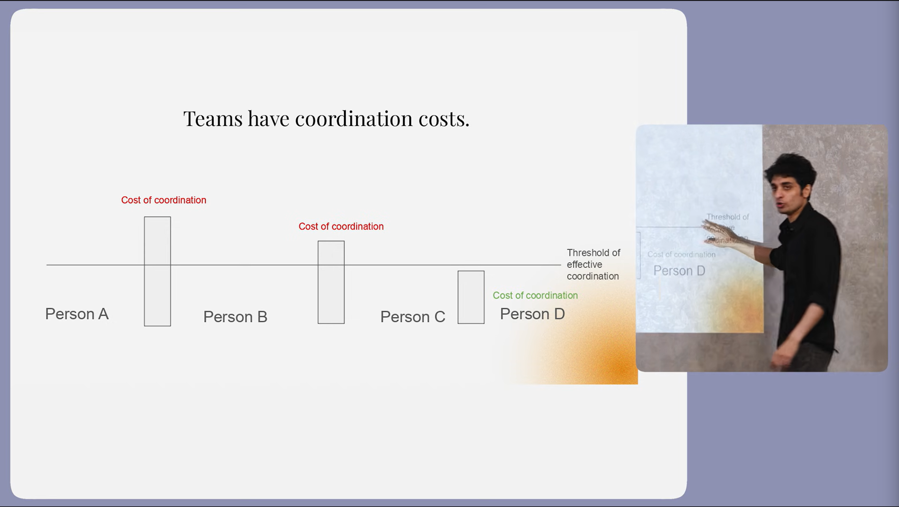
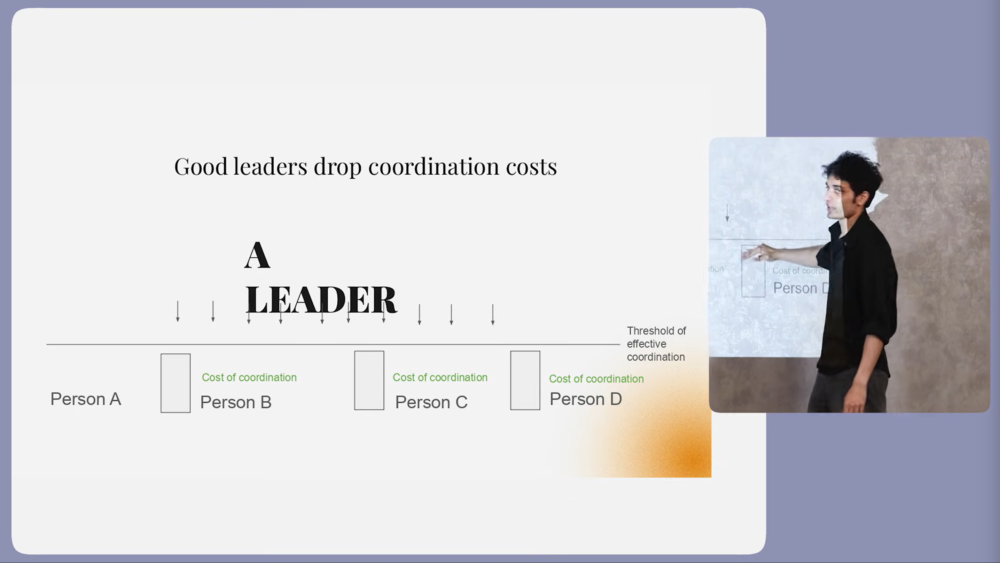
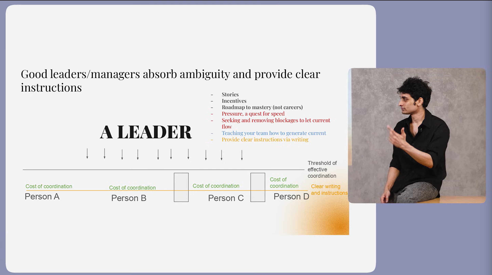
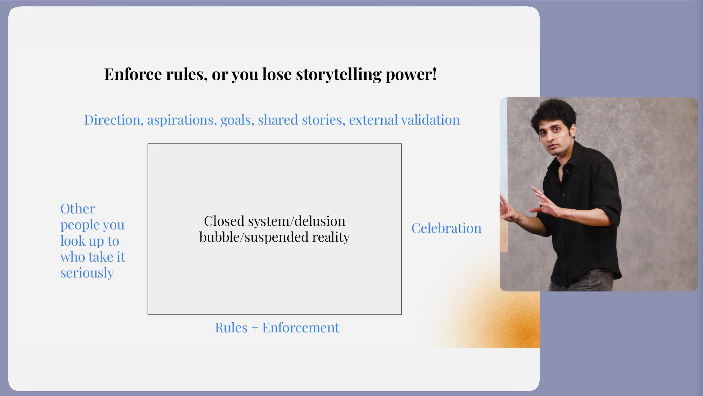
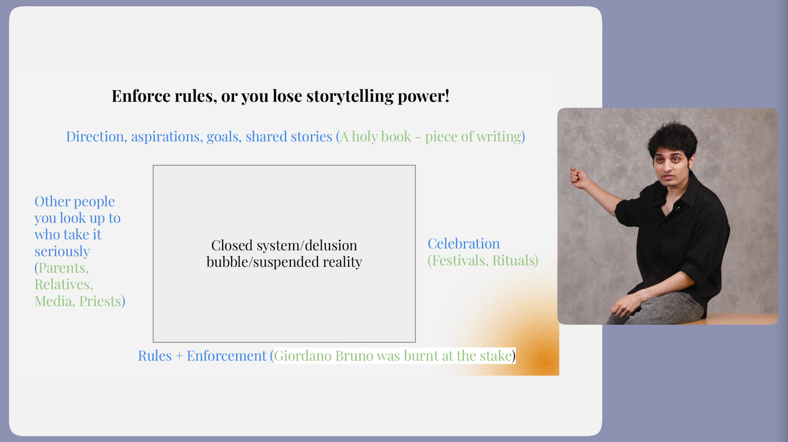

Leadership - Kata 2
Documented on 07/02/2026 by Harsha.
Thanks to Varun Mayya without him this Doc never existed.
Your(You) Goal: Make your Team or Employees to CARE about Our End Customers.
The Big Question, How it is Possible?
Make Leaders in your Team and Pass your DNA to them and by them to the next layer of Employees. How?
Before going to know about it. Let's know who the Leader is?
A Leader should decrease the Coordination Costs of a Team (Extra effort to align a Team).


A Leader should generate the Current to increase the Coordination in a Team.
Through Excitement, Incentive, Inspiration and Fear, etc.
Generating Current in Morning when you Wakeup will have more Impact on you
and your
Team.
A Best Leader always generate INFINITE Current without any Burnout.
The World always tries to Drag you Down but you should get the Current Back to you.
Always push your Team to Bet on Impossible Things even they are small and have them Freedom to Fail.
The Units to Generate Current are:
- Stories
- Incentives
The Stories and Incentives (not only money) should be Personalized they need to align to your Team
Members.
Ex: Working only on 4 Days per Week, Free Cafeteria
and Lounge, Work from Home, etc.
Try Incentives on you also, it works even for you.
So, you must be as much as close you can with your Team Members and know their Aspirations, Needs or Goals.
Cash is the Least Powerful Incentive:
- Respect
- Status
- Purpose
- Roadmap to
Master in their Role
Assign the Team Targets for Long Time and show the clear Progress of the Team to make them feel Confident and
Productive.
You can bring down the Threshold of Coordination, How?

By Providing Clear Instructions to Teams. Any Person in the Team can Work Better if you give Clear Instructions
to them.
So, if you are a Good Leader you must have OWNERSHIP to write down Instructions clearly for your Teams.
Also, the Best Leaders feel Easier to Teach - How to Generate Current.

You must always and always Enforce Rules, if you Leave it.
Everyone feels it's ok to avoid the Rules and
you Lose your Story Telling Power.

Every Company, Religion, Community and Organisation whatever has these FOUR PILLARS
in their System.
Another Big Question is Why do we even need this Closed System?
Simple, A Closed Coordinated System can CRUSH the Uncoordinated System in the
Company and focuses purely on Growth.
But, the Truth is No System or a Person can Coordinate the Team 100%. There are no metrics to Measure, it can be
Observed by Intuition.